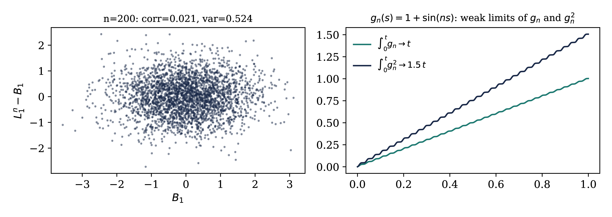

\(\frac{8}{7} > 1\): the mass term alone
(coefficient one) does not absorb the memory. The missing margin
comes from the cube: at large fields it adds \(\frac{1}{4} q |w|^4\), and \(1 +
\frac{1}{4} - \frac{8}{7} = \frac{3}{28} > 0\).
Forward coercivity
Lecture 6
The scalar model
Lemma.
(scalar
forward coercivity) If \(qv_q
+ \frac{\gamma}{3} (v_q + X_q)^3 = \int_{q_0}^q v_s
\hspace{0.17em}
\mathrm{d} s + f_q\) on \([q_0,
T]\), then
and \(|t_q | \le \frac{32}{7} (|w_q | + | \xi_q
|)\). Pathwise, uniform in \(\gamma\).
The scalar model: a simulation
Forcing pulse \(f_q = \kappa \hspace{0.17em} qr_q
\mathbb{1}_{[a, 2 a]} (q)\), \(\kappa\) of
order one. Thresholds: \(\pm \frac{3}{4}\) for
\(V_q / r_q\), \(\pm 1\) for
\(Y_q / r_q\); the Gaussian part \(X_q
/ r_q\) on its own panel.

The pulse pushes \(V\) past \(\frac{3}{4}
r\); the cube caps the excursion and brings it back. On this
range \(|X_q | > r_q / 32\) most of the time:
\(\xi_q\) is not rare until \(g_q\)
is small (here \(q \gg 10^6\)). In this
realisation the Gaussian part stays below the threshold, \(|X_q
| / r_q < \frac{3}{4}\).
Proof: test with \(w^3\)
Where \(w \ne 0\): \(|v| = |w| +
\frac{3}{4} r\), same sign.
Mass: \(qvw^3 = q|w|^4 + \frac{3}{4} qr
|w|^3\).
Cube: \(|X| \le \frac{r}{32} + | \xi
|\), so \(\text{sgn} (w) (v + X) \ge |w| +
\frac{11}{16} r - | \xi |\); the cube is increasing, and
Large-field coercivity: a sixth power and a quarter of the
mass.
Memory: \(|v - w| \le \frac{3}{4} r\),
\(\int_{q_0}^q r \le \frac{2}{3} qr\): \(w^3 \hspace{-0.17em} \int v \le \frac{1}{2} qr|w|^3 +
w^3 \hspace{-0.17em}
\int w\); the first is absorbed by
\(\frac{3}{4} qr |w|^3\).
Forcing: \(w^3 f \le \frac{\gamma}{48} w^6 +
\frac{12}{\gamma} f^2\).
Multiply by \(q^{- 3 / 2}\), integrate,
Hölder and Hardy: \(\int q^{- 3 / 2} w^3
\hspace{-0.17em} \int w \le \frac{8}{7} \int q^{- 1 /
2}
w^4\), and \(\frac{5}{4} - \frac{8}{7} =
\frac{3}{28}\).
The excess of the forecast over the threshold is controlled by how
often the Gaussian field is large (known, \(N\)-independent) and by the
backward forcing. No smallness of the coupling;
pathwise.
The lattice version
Proposition.
(forward
coercivity) For \(q_0\)
large, at every \(N, T\), pathwise:\(J_T \le C (G_T + E_T)\), \(\|G_T \|_{L^p} \le C \gamma^3 p^5\).
Proof: \(\mathrm{d}_s (\mathscr{P}_{q, s} Z_s) = -
\mathscr{P}_{q, s} b_s \mathrm{d} s
+ \mathscr{P}_{q, s} \Xi_s
\mathrm{d} W_s\), a true martingale at fixed \(N\).
\(Z\) = expected source on the unresolved scales,
transported back, plus the boundary error. Compare \(F_t
=\mathbb{E}_t [F_T]\) in Lecture 4: here the source is the
defect.
\(b^{\text{l}}\) is not small, but it enters the
backward energy only through the large-field action \(J_T\),
with the small factor \(\gamma^2 / q_0\).
Closing the loop
Theorem.
(cutoff-uniform
energy estimate) One \(q_0
= q_0 (\gamma)\): for all \(N\), \(T\), \(p \ge 1\),
The approximate forecast differs from the exact one by \(O (q^{- 5 / 4})\) in \(L^2
(\mathbb{P}; L^2)\) (root mean square), uniformly in the
lattice.
\(H_q Z_q = O (q^{- 9 / 4})\) in \(L^2
(\mathbb{P}; L^2)\): up to an integrable drift, the
forward equation is the explicit SDE \(\mathrm{d} Y =
b (Y) \mathrm{d} q + H (Y) \mathrm{d} W\).
Comparison with the variational method
Comparison with Boué–Dupuis (Lecture
4)
There: drift \(u = - 4 \lambda \dot{Q}^{1 / 2} : X^3 :
+ r\) (\(\lambda \int : \varphi^4\): of
Lecture 4). Here: \(\bar{\Gamma}\) does all such
changes of variables at once in the forecast coordinate; \(Z\) plays the role of \(r\).
Coercivity of the quartic: pathwise in the forward
equation; the remainder: in expectation through the
backward one.